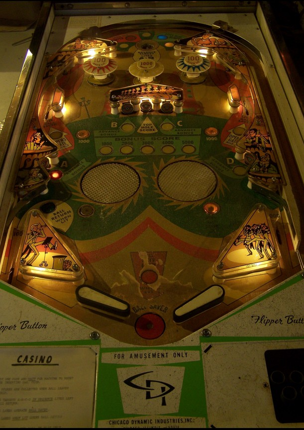

Not to be confused with other games that have the word Casino in their name, such as Big Casino (Gottlieb, 1961), Casino Royale (Segasa Sonic, 1976), or High Roller Casino (Stern Pinball, 2001).
The top saucer spots a letter in A-B-C-D and gives the lit award. 10-point switches rotate whether the lit award is 500 points, light red bumper, 500 points, light blue bumper, or 500 points. The middle standup target in the center 3-bank also awards whatever is available from the top saucer.
Red and blue bumpers score 10 points, or 100 when lit. The yellow bumper scores 100 points, or 1,000 when lit. Lighting the red or blue bumper also lights the upper left or upper right side lane. Making one of these upper side lanes when lit opens the free ball gate in the right out lane. The gate stays open for the rest of the ball, even if it is used, and redirects all right out lane balls back to the shooter lane for a replunge. The yellow bumper is only lit if both the red and blue bumpers are lit at the same time.
Hit the A-B-C-D standup targets at any time to add 1,000 points to the end of ball bonus, up to a maximum of 5,000. Hitting A-B-C-D in order activates the Ball Return kickback in the left out lane, which also remains active for the rest of the ball even if it is used. The top saucer or center standup target spots the current letter in A-B-C-D for you.
Going through either upper side lane at any time raises the Ball Saver center post, which completely blocks off the center drain when raised (though the ball may still be able to drain between the post and a raised flipper). The Down Ball Saver buttons near the slingshots lower the center post.
In the lower half of the playfield are two large spinning discs, similar to those seen on games such as Fireball or Whirlwind. The discs cause the ball to fly in unpredictable directions in the lower playfield. The left disc spins anticlockwise and the right disc spins clockwise, so they don't spike the ball into the center drain super often, but they can throw the ball into the slingshots or out lanes. This is why it is so important to protect both out lanes as soon as you can. Always be alert.
The end of ball bonus cannot be doubled, collected mid ball, or held from ball to ball. There is no Special or extra ball feature. Tilt ends the ball in play only.
The below picture of Casino's playfield was taken from Pinside, where it is image #30605.
